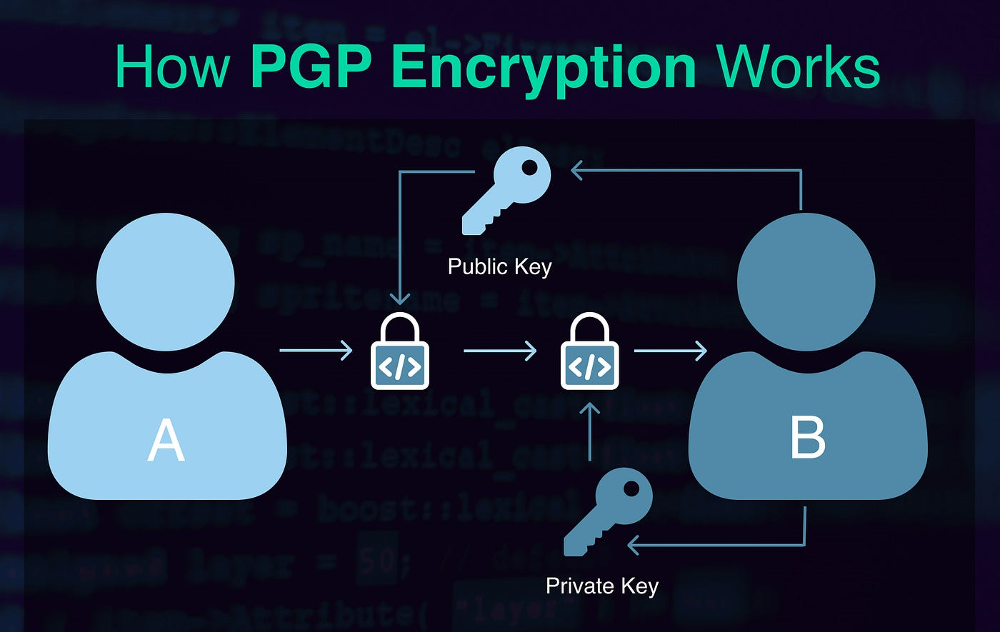

Nowadays, privacy and security are among the most discussed topics in IT. The reason it´s simple: data is valuable and data is knowledge. That´s the primary reason why individuals and the companies need to protect their data and privacy
I´m going to explain a simple and very common example: Imagine you receive an email that looks normal but it´s a malicious mail and you accidentally download a virus this poses a serious security issue, putting all of your data-contacts, emails, photos, videos- at rick, someone could potentially can access at this information and use it for harmful purpose. And this is also why both users and organizations should use end-to-end encryption technologies, to ensure more secure communications and effectively safeguard their information.
At this point, I´m sure you understand the important about privacy and security. One of the best preventive measures you can take is to use encrypted technologies, one of the most well-know is OpenPGP standard.
What is the OpenPGP Standard?
OpenPGP is a protocol for encrypting and signing data, ensuring secure communication and data protection. It´s based on PGP, originally developed by Phil Zimmermann. It allows users encrypted emails and files, making them accessible only for authorized parties. OpenPGP uses a combination of private and public keys and that allows privacy, ensures confidentially and integrity. You can find more information in OpenPGP website.
How does OpenPGP generate keys?
The OpenPGP standard employs a combination of cryptography, data compression and hash techniques. It enables the creation of paired secret (private) and public keys associated with the user data. The key generation process relies on algorithms that use random bytes generation, requiring user actions like typing or mouse movement to ensure sufficient randomness. The private key must remind confidential and should never be shared with anyone, while the public key can be distributed to those with whom you wish to exchange secure emails.
In this image we could see how communication works with OpenPGP standard:

1 User A wants to send User B a private email
2 User B generates a public and private key
3 User B keeps the private key and sends back the public key
4 User A encrypts the data with B´s public key
5 User A sends the private encrypted data
6 User B decrypts the message with the private key
More than emails:
This type of security is not limited to secure emails; it can also be used to encrypted files and for authentication. Such technologies are invaluable when sharing sensitive information, like sending a password to a client for accessing services.
Protecting your data is crucial. In the digital landscape users, companies and employees are vulnerable to threats if they don't take precautions against malicious emails, not secure websites. By implementing OpenPGP and following best practices, you can significantly reduce these vulnerabilities and maintain the integrity of your communications.
In conclusion, OpenPGP is more than just an email encryption tool; it’s a comprehensive approach to safeguarding sensitive information across various platforms. Embrace this technology to enhance your data security and ensure that your communications remain private and protected.